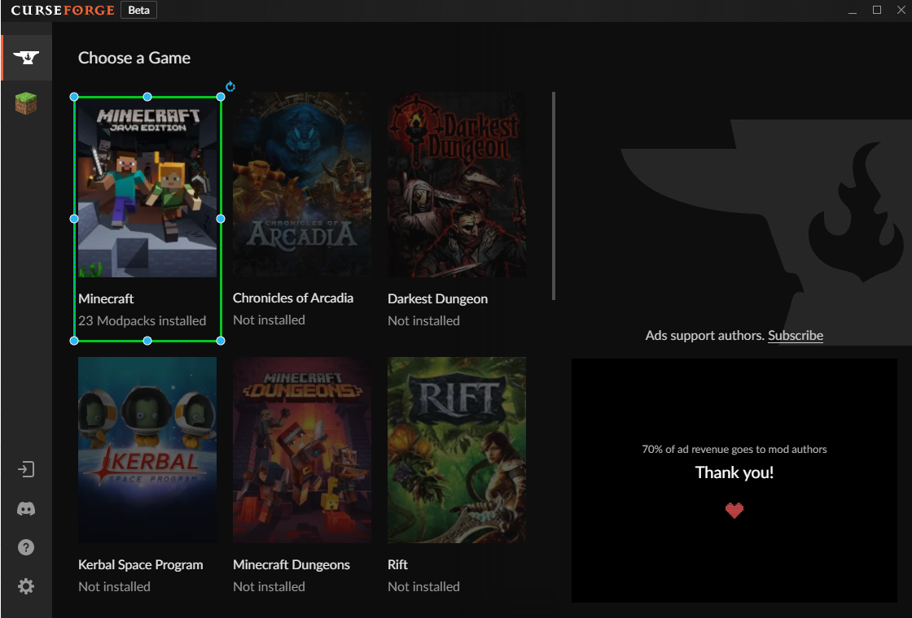
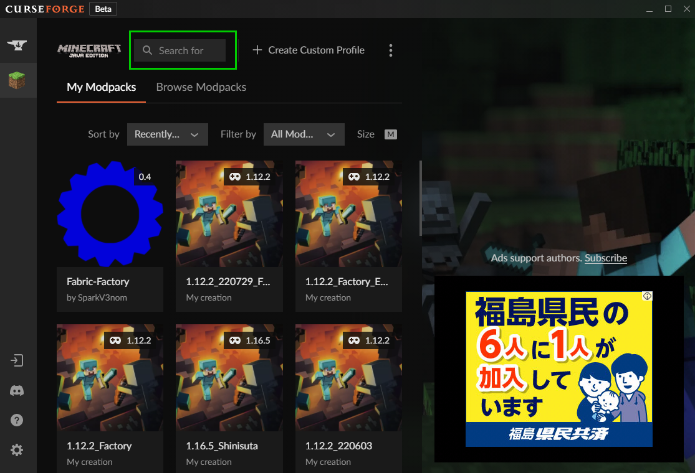
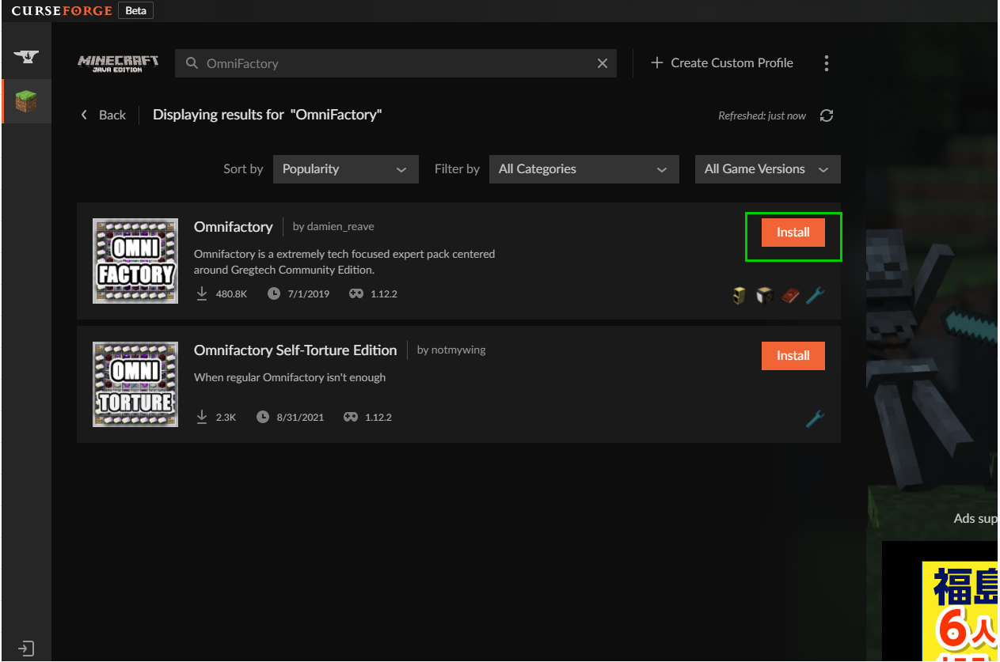
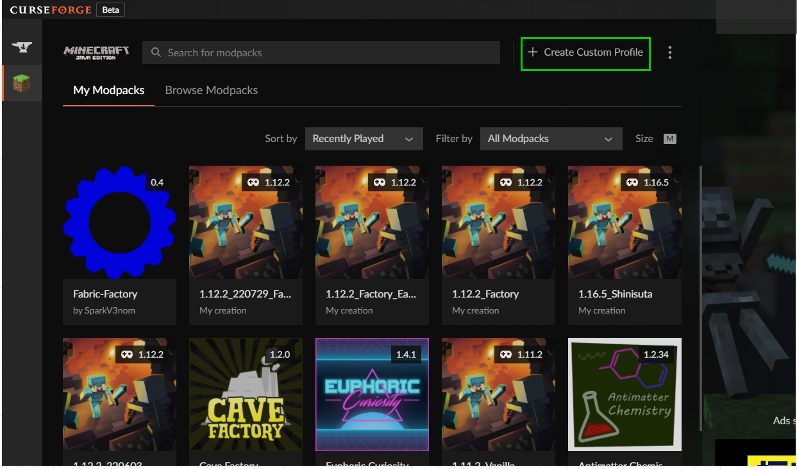
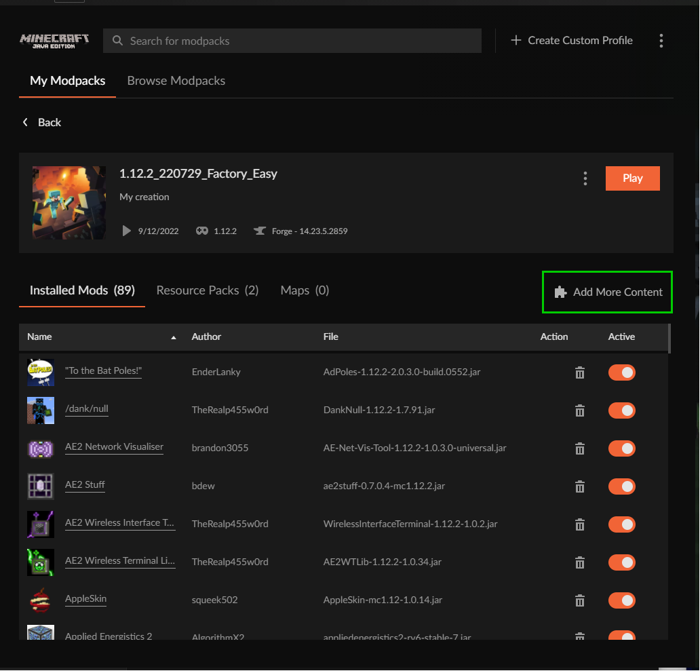
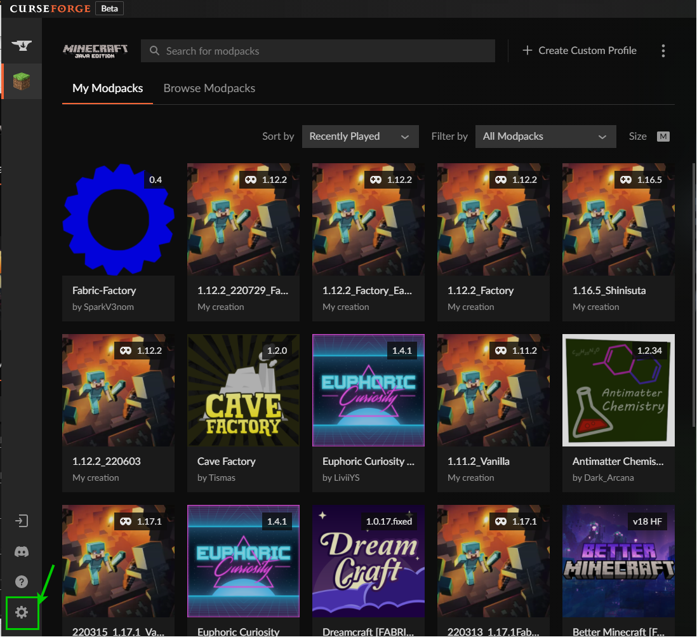
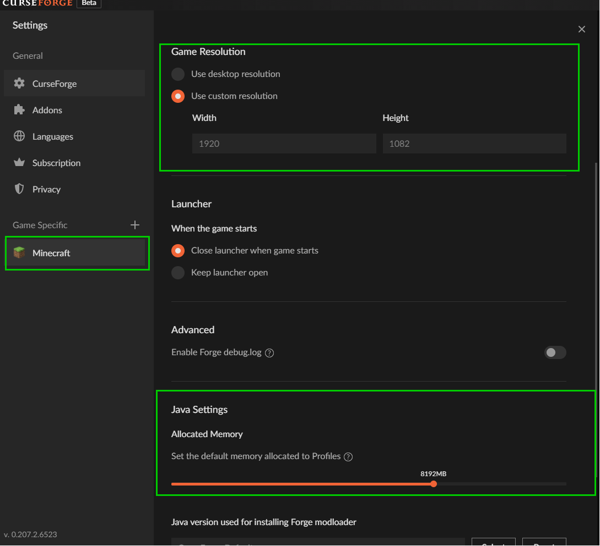

大抵のModやModpackは CurseForge アプリを使用して簡単に導入、環境セットアップができる。
Mod/Modpack導入手順
Modpackを導入したいとき、
-
CurseForgeのインストール&起動
https://download.curseforge.com/
-
Minecraftを選択

-
Modpack検索

-
Installクリック

-
My Modpacksタブから遊べる
独自にModを導入したいとき
-
Create Custom Profileをクリック

-
プロファイル名、バージョンなどのの項目を入力
-
作成されたプロファイルを選択し、
Add More ContentからMod検索、インストール画面に移る。

Mod/Modpackをプレイする前の設定
-
設定を開く(左下)

-
Minecraftを選択して、
初期解像度とか、使用メモリ量とか設定する

選択しているMod/Modpack
選択しているModpack : Fabric-Factory
[Top]
[Top]
便利アイテム/ブロック
[Top]
追加要素
追加の構造物、Mobなど。
[Top]
1.12.2
工業MODメインでやるなら、今でも選択肢に入るバージョン。
でも、今は他のバージョンでも面白そうなものありそう。
このバージョンの工業MODはアイテム管理とインフレの側面がある。
とりあえず、ここにまとめたものはほとんどが自分が結構長く遊んでいたMOD。
システム面
[Top]
バランス調整のため
[Top]
便利アイテム/ブロック等
[Top]
資材管理/整理
[Top]
エネルギー関連
[Top]
工業関連 (たいてい、アイテム輸送も兼ねる)
[Top]
ディメンション追加
[Top]
その他
[Top]
チート、準チート
[Top]
1.12.2 その他
あまり自分は遊んでいないけれど知っているものをまとめてみた。
システム系
魔法/魔術系
[Top]
建築系
建築系は次のページとか参考になる。<建築系br>
https://fukafuka295.jp/minecraft-pc-java-mod-best20-2021-matome/
[Top]
1.12.2 モッドパック
1.12.2のModpackの知っているものをまとめた。
[Top]
1.18.2以上
1.18.2とかそれ以上のMod環境にはforgeベースと、fabricベースがある。
forgeにしかないMod、fabricにしかないModもある。
forgeのほうが自由度は高い。のかな。
fabricのほうが景色はきれいになったりする。
fabricのほうがforgeよりもマイクラの起動時間が短い
1.18.2
1.18.2のModはあまり詳しくないがいくつか知っているものがあるので、それらを紹介する。
また、ここでは紹介しないが、1.18.2にも上の、1.12.2の欄で紹介したMODもそこそこある。
システム系
[Top]
工業系
[Top]
ディメンション変化系
[Top]
1.18.2 Modpack (1.18.1も含む)
[Top]